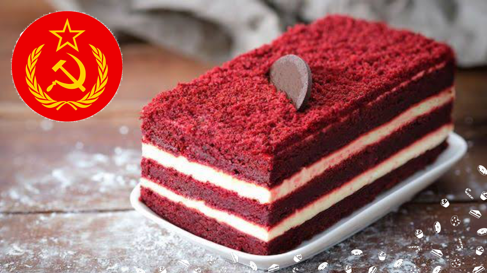

Bolo Rublo (Bolo Red Velvet)

Ingredientes:
- 2 ½ xícaras de farinha de trigo
- 1 ½ xícaras de açúcar
- 1 colher de chá de bicarbonato de sódio
- 1 colher de chá de sal
- 1 colher de chá de cacau em pó
- 1 ½ xícaras de óleo vegetal
- 1 xícara de buttermilk (ou leite com limão)
- 2 ovos grandes
- 2 colheres de sopa de corante vermelho
- 1 colher de chá de vinagre branco
- 1 colher de chá de essência de baunilha
Modo de Preparo:
- Pré-aqueça o forno a 180°C.
- Em uma tigela, peneire a farinha, o cacau em pó, o bicarbonato e o sal.
- Em outra tigela, misture o açúcar, o óleo, os ovos, o corante vermelho, o vinagre e a essência de baunilha.
- Adicione os ingredientes secos aos ingredientes úmidos, alternando com o buttermilk, e misture até ficar homogêneo.
- Despeje a massa em uma forma untada e enfarinhada.
- Leve ao forno por cerca de 30 a 35 minutos, ou até que um palito saia limpo ao ser inserido no centro do bolo.
- Deixe o bolo esfriar antes de desenformar e decorar.
Tabela Nutricional (porção de 100g):
| Componente |
Quantidade |
%VD* |
| Calorias |
350 kcal |
17% |
| Proteínas |
4 g |
5% |
| Gorduras totais |
18 g |
33% |
| Gorduras saturadas |
7 g |
32% |
| Gorduras trans |
0 g |
** |
| Carboidratos |
40 g |
13% |
| Fibra alimentar |
1 g |
4% |
| Sódio |
300 mg |
13% |
Link da receita em vídeo: